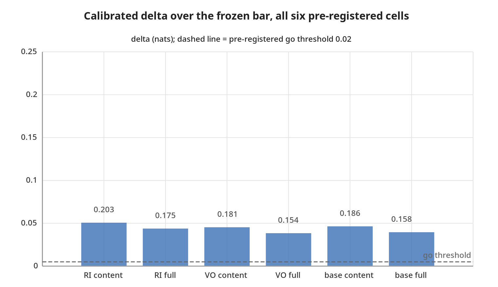
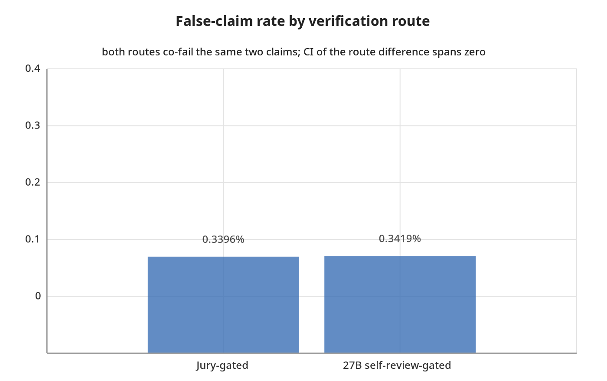
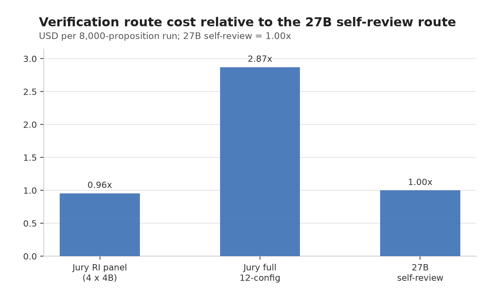

Agreement across large language models is a measurement instrument, and this paper treats the whole instrument as the object under test, under pre-registration, in two studies built one on top of the other. In Study 1, an identical frozen proposition-aggregation protocol run on two independently selected three-model panels returned opposite registered verdicts on synthetic reasoning traces (−0.159 vs +0.122 nats, both 95% CIs excluding zero); a post-hoc diagnosis located the disagreement in the instrument twice over — a calibration map with no intercept measured against a baseline that had one, and a corpus that could barely contain falsehoods (0 of 607 negative-polarity propositions ever scored by the alignment layer) — and a second registration, git-tagged before any new generation, confirmed the central repair on two panel–corpus configurations sharing no model family (+0.220 and +0.272 nats) while falsifying two companion predictions. A 2026-08-29 correction then retracted a further claim of the draft (the "one vote per source" invariant, whose frozen arm was actually capped and unsigned, so it measured polarity, not capping: no unsigned arm exceeds AUROC 0.6063 anywhere, every signed arm is at least 0.9001) and first reported, post-hoc, the contrast that separates pooling from choosing well: the panel beats the calibration-selected best single source by +0.0448 to +0.0887 nats on 3 of 4 panel-cycles, inconclusively on the fourth. A third cycle (prereg-v3) is registered to test that margin as its primary.
Study 2 stands on the repaired instrument: a jury of twelve 3–4B local language-model configurations (four families × three arms) votes PASS / FAIL / NOT_STATED on 8,000 labeled claims constructed from 200 real news articles (96,000 votes in 13.2 h on one Mac Studio), and the votes are aggregated by a Dawid–Skene model with per-arm calibration maps fitted once on a smaller prior corpus and applied frozen (the EM weights themselves are refit unsupervised on the new votes) — the protocol we name Pauper Consensus. Every design rule is inherited from Study 1's corrections: tag before inference (R1), intercept-bearing calibration maps (R2), a corpus with a registered 25% FAIL mass (R3), one signed observation per source (R4). The pre-registered capability gate passes: +0.20289 nats of log-loss over a frozen model-free bar at the registered 25% FAIL-mass design point (95% article-block bootstrap CI [0.18737, 0.21740]; refitting the bar on v2 alone costs the headline −0.020 nats, §13.3), all four test cells green — while the companion registered prediction that the model-free bar's own value would transfer fails. The system gate against a single near-frontier 27B model passes via its cheaper-and-indistinguishable branch: both routes co-fail the only two unsupported claims in the defendant stream (12–0 jury agreement across all twelve configurations, PASS from the 27B on both); with two false claims in the stream the false-claim rates are statistically indistinguishable (95% CI [0.0, 5e-05]) — a cost result, not a quality-equivalence claim — and the jury route is 0.781× length-adjusted cost; the 27B is nonetheless the more accurate single model on the full pool (95.887% vs 93.912% three-state), and the binding hardware barrier is 48 GB GDDR7 memory, not arithmetic. Across the two studies, every "failure" — the cycle-1 flip, the two failed cycle-2 predictions, P9, the mis-specified null, the 0/2 catch — was an instrument property or a registered bound, surfaced under frozen registration, not a failed hypothesis. The honest unit of account for LLM-based verification is the instrument: protocol, corpus, calibration, hardware, cost.
Keywords: fact verification; LLM juries; Dawid–Skene estimation; weak supervision; pre-registration; calibration transfer; inference cost; consumer hardware; news fact-checking
Pooling several language models on the same prompt and treating agreement as evidence of correctness is now standard practice. It is well established at the answer level [1], and a fast-growing 2026 literature asks when label aggregation of LLM judges is sound: dependence-aware Ising models [7], confounder-aware aggregation [8], the observation that nine frontier judges behave like two effective votes [9], and a co-failure ceiling on routing and voting [14]. What that literature has not yet done, to our knowledge, is treat the whole measurement apparatus — the calibration map, the corpus, the vote accounting, the hardware, the price — as the object under test, under pre-registration.
This paper presents two pre-registered studies built one on top of the other. Study 1 [25] asks whether cross-model agreement on individual propositions inside reasoning traces predicts proposition truth, as it does for final answers. Its first cycle produced a result that looked like a finding about models and turned out to be a finding about the instrument: the same frozen protocol returned a decisive stop on one three-model panel and a decisive go on another. The post-hoc diagnosis, frozen into a second registration before any new generation, identified two instrument defects — a missing intercept in the calibration map, and a corpus that could barely contain falsehoods — and the second cycle confirmed the central repair while falsifying two companion predictions. A correction to the standalone draft then retracted one of its invariants and exposed, post-hoc, the one contrast that matters for pooling. Study 2 is the same measurement program continued on open news, standing directly on the instrument Study 1 repaired: the calibration maps carry the intercept the flip demanded (rule R2), the corpus carries a registered FAIL mass (R3), every vote is one signed observation per source (R4, as corrected), and the protocol is tagged before the first inference call (R1).
Study 1 ran the identical frozen protocol on two three-model panels over 150 synthetic reasoning items (ProofWriter [32]; ground truth by construction). The registered primary — held-out delta log-loss of a three-state Dawid–Skene EM arm against a covariate baseline, GO at δ = 0.02 nats — flipped sign between panels: Panel A STOP (−0.159 nats), Panel B GO (+0.122 nats), both 95% CIs excluding zero. Report either panel alone and you are confidently wrong. Re-fitting the calibration map with an intercept-bearing Platt form flipped Panel A to GO and took all 12 panel × stratum × arm combinations to GO, with every rank-based metric invariant; the corpus held only 14–16 test negatives, and the alignment layer had scored 0 of 607 negative-polarity propositions. The diagnosis became three falsifiable predictions, frozen and git-tagged before any new generation; Cycle 2 confirmed the central prediction (+0.220 [+0.160, +0.280] nats on a new Panel A, +0.272 [+0.180, +0.353] on the continued Panel B) and falsified the other two. The 2026-08-29 correction retracted the "one vote per source or nothing" invariant — the frozen arm behind that contrast is capped and unsigned, so it measured polarity (signed vs unsigned counting), not capping; no unsigned arm exceeds AUROC 0.6063 anywhere — and first reported, post-hoc, the panel-versus-best-single-source contrast: +0.0448 to +0.0887 nats on 3 of 4 panel-cycles, inconclusive on the fourth (§8.3). The NLI stage of the instrument had run in fp16 in both cycles (disclosed 2026-08-30; §9), and a third cycle is registered against the exposed contrast on 9,805 items (§10).
Study 2 applies the repaired instrument to open news. A labeled corpus of 8,000 claims is constructed from 200 real news articles with a cutoff-gap design — events after every voter's training cutoff, so verdicts must rest on the article text — with a per-topic contamination gate run before any generation. A jury of twelve 3–4B local configurations (four model families × three arms: base zero-shot, and two fine-tuned adapters trained under reason-included and votes-only conditions) votes PASS / FAIL / NOT_STATED on every claim: 96,000 votes in two sequential phases, each served 6-way in parallel via llama.cpp on a Mac Studio M3 Ultra, in 13.2 hours. The votes are aggregated by a three-state MAP-EM Dawid–Skene model [3,4] with a per-arm affine calibration map; the calibration maps and the model-free bar are fitted once on a smaller prior corpus (v1, 1,200 claims) and applied frozen, while the EM weights are refit unsupervised on the v2 votes alone (no v2 label enters that fit). We name the protocol Pauper Consensus, after the small, cheap local models that make up the jury. Two pre-registered questions:
Both are answered exactly as the gates are written. The capability gate passes: the frozen calibration clears the bar by +0.20289 nats (95% CI [0.18737, 0.21740]) in the headline cell, all four pre-registered test cells green, and the observed delta lies above all 10,000 realizations of the like-for-like null contrast (the registered sum-statistic null is mis-specified by construction — instrument defect three, §13.2). The system gate passes via branch (b), and only via branch (b): both routes co-fail the only two unsupported claims in the stream (12–0 jury agreement on each, and PASS from the 27B), their false-claim rates are statistically indistinguishable (0.3396% vs 0.3419%; bootstrap CI [0.0, 5e-05] against n = 2 false claims in the stream), and the jury route is strictly cheaper (0.781× length-adjusted; 0.956× on the unadjusted proxy) — the registered pass is a cost result, which §14.2 says plainly.
Our contributions:
Part I (§3–§11) is Study 1 in full. Part II (§12–§15) is Study 2, built on the design rules Study 1 fixed. Part III (§16–§22) reads the two studies together, positions the work, states the limitations, concludes, and documents reproducibility for both studies in the one repository.
Liu [1] is the closest prior result: a panel of independently trained models treated as a jury, agreement structure as the verification signal, beating self-consistency and trained verifiers, at the level of final answers, with error decorrelation identified as the mechanism and the entire gap to an oracle selector closed on competition mathematics. Self-consistency resamples one model and inherits its correlated errors; Mixture-of-Agents adds a synthesis model that reads everything with no structural scoring; multi-agent debate lets agents see each other, which produces herding [21–24, 31]. Unsupervised process reward models score reasoning steps without labels but within a single model's distribution [35]. On the small-model side, the Avengers recipe [13] and the simple LLM-ensemble strategy [26] unite smaller open models against proprietary giants, and the multi-agent consultation line [31] is closest on "small ensemble vs one large model". Study 1 asks whether the premise survives being moved down a level, from the answer to the individual propositions inside a rationale — the move that would make agreement useful where there is no extractable answer to vote on — with each agent capped at one vote per proposition. Study 2 asks the same question for claims verifiable against a source document.
The primary estimator in both studies is the three-state Dawid–Skene model [3] and its weak-supervision descendants [4,5,6]: truth latent, per-voter sensitivity, false-positive rate and — where votes are asymmetric — truth-dependent coverage estimated from the vote matrix alone. Silence is a state, not a missing value: under truth-dependent coverage, silence is informative, and the estimator uses it (Study 1's M0 invariant I4, established on simulation before any inference, showed that both naive treatments of silence fail, in opposite regimes). Correlated sources bias such estimators in known ways [34], which is why both studies measure residual error correlation directly (Study 1's E0 factorial; Study 2's e0, §13.4). The 2026 cluster moves the field past naive conditional independence: Ising-model label aggregation shows class-dependent dependence can make Dawid–Skene strictly suboptimal [7]; CARE shows confounders (verbosity, style) must be separated from latent quality [8]; the Bayesian win-rate calibration line [11] models evaluator reliability before aggregating; higher-order-information aggregation beats majority voting with provable guarantees [10]. Our result is complementary and deliberately minimal: the simplest member of this lineage, with its calibration fitted once and applied frozen, is already a large measurable win in the heterogeneous-small-families regime (§13.4); dependence-aware aggregators may buy more, but the pre-registered bar does not require them.
The label scheme descends from FEVER [18]; the atomic-claim instrument from QA-based factual consistency [17], FActScore [19], and MiniCheck [20]; closest on domain plus open models is the HerO/AVeriTeC pipeline [15,16] and the end-to-end fact-check writing line [27], systems optimized for task performance without pre-registration, calibrated aggregation, or cost accounting. The debate-and-deliberation line [21–24] adds multi-round interaction costs that our one-vote-per-configuration design avoids; the weak-supervision benchmarking line [6] and the annotation-protocol line [12] are the methodological neighbors of our registration discipline. Cost-side anchors: org-level on-premise economics [28], prompt-compute tradeoffs [29], energy accounting [30]. The methodological literature on pre-registration mostly concerns human-subject sciences; the failure mode this paper documents — a frozen comparison that is unfair in a way nobody anticipated, so that freezing preserved the unfairness — and the remedy of a second registration testing the first's diagnosis, are, to our knowledge, rarely exhibited in ML evaluation. The skeptic's anchors for correlated LLM panels are [9] (nine frontier judges behave like two effective votes) and [14] (a co-failure ceiling on routing and voting, with the co-failure rate not identifiable from pairwise correlations); Study 2 confronts both directly (§13.4, §14.3).
Study 1 reports, in full, the pre-registered measurement of cross-model proposition agreement. Its standalone preprint — "The Flip Was in the Instrument: Two Pre-Registered Cycles of Cross-Model Proposition Aggregation", draft v3, with the 2026-08-29 correction notice — is cited as [25] and folded into the same Zenodo record; the pre-correction text remains available at firstpass/ @ e63f946 (§22). Analyses are labelled REGISTERED (frozen before the data they touch) or POST-HOC / EXPLORATORY throughout. What Study 1 establishes is the instrument itself — what proposition-level agreement can measure, under which calibration, on which corpora — and the four design rules it ends with are exactly the rules Study 2 obeys.
150 ProofWriter OWA items [32] (hitachi-nlp/proofwriter_processed_OWA, depth-3/test, conjunctive rule required, target depth ≥ 2), split 50/100 calibration/test at the item level, seed 20260807. Every proposition carries a truth value derived from the theory's closure, so ground truth is by construction. Two panels of three model families each, sharing no family: panel A (local: thinkingcap-qwen3.6-27b, laguna-xs-2.1, ornith-1.0-35b) and panel B (OpenRouter: nemotron-3-super, gpt-oss-20b, gemma-4-26b). One fixed extractor turns each trace into claims; claims align to canonical propositions via local embedding retrieval (top-k = 8) and bidirectional CPU NLI [33], thresholds frozen; each agent is capped at one observation per proposition. Arms: WCT-U (uniform signed support), WCT-EM (three-state Dawid–Skene, unsupervised), WCT-C (same observation model fitted on labelled calibration items), a covariate baseline (logistic regression on depth, coverage, verbosity, length; a feature list that diverges from prereg.yaml's registered wording; the implementation predates the first results, both cycles compare against it, and cycle 2's implementations-are-the-registration clause exists to close exactly this gap), and ablations. The registered primary: held-out item-stratified Δ log-loss, WCT-EM vs the covariate baseline, δ = 0.02 nats, item-block bootstrap. Calibration of every score arm: a single fitted temperature, sigmoid(s/t).
| panel A (local) | panel B (OpenRouter) | |
|---|---|---|
| primary, all items | −0.159 [−0.249, −0.070] → stop | +0.122 [+0.037, +0.197] → go |
| negation stratum (post-hoc, §4.2) | +0.001 [−0.104, +0.108] → inconclusive | +0.277 [+0.223, +0.343] → go |
| within-item AUROC | 0.905 [0.833, 1.000] → go | 1.000 [1.000, 1.000]† → go |
| permutation null | p = 0.001 | p = 0.001 |
†Degenerate interval, declined to interpret: 14 test negatives, perfect separation, every resample also perfectly separated.
Identical items, split, extractor, measurement stack, analysis code, and frozen δ. Both intervals exclude zero in opposite directions; this is not a disagreement more n resolves. The covariate baselines are near-identical across panels (0.2097 vs 0.2112 test log-loss) because they depend on items, not models: the whole movement is in the WCT arms.
Note the pattern that becomes the diagnosis: the two panels agree on every rank-based measurement (within-item AUROC passes on both, precision@k beats the baseline on both, the permutation null rejects at p = 0.001 on both) and disagree only on the calibration-sensitive metric.
(POST-HOC. The stratification in this section was defined after panel A's results were visible, as a validity restriction recorded in DECISIONS.md 2026-08-08; the frozen all-items primary of §4.1 is unchanged by it.)
48% of the pre-registered proposition set (242 of 502 scored propositions on panel A; 234 of 484 on panel B) came from Noneg theories, in which nothing is stated with negation, so no positive proposition can ever be disproved. Measured prevalence on that stratum: exactly 1.0000, on both panels. Removing it moves panel A's primary from −0.159 to +0.001 (+0.160 nats) and panel B's from +0.122 to +0.277 (+0.155 nats): movements that flip panel A's verdict from stop to inconclusive without touching its ranking results at all.
A second, subtler restriction was found later (post-hoc): the alignment layer never scored a single negative-polarity proposition: 0 of 607 across both panels. Every scorable negative is a positive-polarity falsehood, of which the corpus held 46, of which roughly 62% scored. The test splits therefore held 14–16 negatives, and every claim about false propositions in cycle 1 rests on that many observations.
The registered E0 directional prediction (cross-family panels carry lower residual error correlation than same-family) failed in sign on panel A (ρ 0.080 vs −0.022) and was uncomputable on panel B, where two of three models answer every item correctly; the panels are at answer-level ceiling, and the test had negligible power. The arm draft v3 called a claim-instance ablation destroyed the signal on every stratum of both panels (AUROC 0.502–0.554 against 0.891–1.000 for the signed arms). Those figures stand; their interpretation does not. That arm is capped and unsigned, so what it shows is the cost of discarding polarity (correction, §8). Registration hygiene: cycle 1's own protocol required a git tag before any inference ran, and no tag existed; the retrospective record (tag prereg-retrospective-2026-08-15) documents what the file timestamps can and cannot establish: notably, that the frozen δ values predate the first results, but that panel B's primary designation cannot be shown to predate panel A's results.
The registered calibration map sigmoid(s/t) is a positive scalar divisor: it can sharpen or flatten a score but cannot shift its mean. The covariate baseline is a logistic regression fitted with an intercept. Only one side of the registered comparison could match the base rate.
Re-analysing the frozen cache under three calibration maps, all fitted on calibration only: temperature and Platt are strictly monotone, so AUROC, precision@k and the selector's operating point are unchanged by construction (asserted, exact to machine precision), while isotonic is only weakly monotone (its plateaus create ties and shift AUROC by up to 0.034), so the invariance argument rests on the two strictly monotone maps alone. Only log-loss can move under them, and anything that moves is calibration:
| panel A, all items, WCT-EM | log-loss | mean pred − prevalence | Δ vs baseline | decision |
|---|---|---|---|---|
| temperature (registered) | 0.385 | −0.198 | −0.159 [−0.249, −0.070] | stop |
| Platt (adds intercept) | 0.146 | −0.018 | +0.069 [+0.029, +0.112] | go |
| isotonic | 0.143 | −0.010 | +0.071 [+0.028, +0.118] | go |
Under Platt, all 12 panel × stratum × arm combinations return go. The attribution was verified adversarially: an intercept alone at the frozen registered slope captures 98.8% of the full Platt improvement on the primary cell; the go survives an exact-ML refit of the baseline and a Platt-recalibrated baseline (weakest margin +0.056 [+0.023, +0.096]); item-blocked 5-fold cross-validation inside the calibration split preserves the advantage in all folds, and Platt's test log-loss beats its calibration log-loss, so this is not overfitting. A label-flip probe (all test labels inverted, every fit re-run) left every fitted parameter and prediction bitwise unchanged (run in the 2026-08-15 adversarial validation of this diagnostic and recorded in DECISIONS.md, then repeated independently in cycle 2's verification, §6.2): no path from test labels to any map.
The mechanism, refined by cycle 2 (§11.3): the intercept corrects panel-specific score miscentring: how far the temperature-mapped scores sit from the base rate. On cycle 1's panel A that miscentring was 0.198 against the test split's prevalence of 0.951 (0.944 over all scored propositions); extreme prevalence amplified its cost. Prevalence is the amplifier, not the variable.
This diagnosis is post-hoc, and post-hoc it proves nothing about the method: turning a registered stop into a go by re-choosing the calibration map after seeing results is precisely the analyst degree of freedom this study documents. Its status is that of a hypothesis, which is why cycle 2 exists.
Cycle 1's registration froze a comparison that was unfair in a way nobody noticed: the baseline got an intercept, the treatment arms structurally could not have one. Freezing prevented tampering; it could not make the comparison fair, and the unfairness was invisible until two panels disagreed. That is the general lesson we take: pre-registration converts silent analyst freedom into visible specification defects, but only replication makes the defects findable.
The cycle-2 registration (prereg_v2.yaml, tag prereg-v2-2026-08-16) was committed and git-tagged before any cycle-2 generation call, the discipline cycle 1 lacked. It freezes:
ornith35) and the identity of its loaded weights (Qwen3.8-27B GGUF, 27.3B parameters) are pinned in the registration, with any other server echo defined as substitution.Generation: 450/450 cached on each panel (panel B: 216 new calls plus 234 reused from cycle 1), zero errors in the final cache, zero retries needed. Analysis: the tagged code, unmodified (verified: the diff between tag and analysis is empty).
| REGISTERED, cycle 2 | panel A (new) | panel B (continuing) |
|---|---|---|
| primary (Platt) | +0.220 [+0.160, +0.280] → go | +0.272 [+0.180, +0.353] → go |
| primary vs exact-ML baseline | +0.224 [+0.158, +0.291] → go | +0.263 [+0.166, +0.353] → go |
| co-primary precision@k | +0.092 [+0.059, +0.119] → go | +0.077 [+0.042, +0.112] → go‡ |
| within-item AUROC | 0.924 [0.890, 0.960] → go | 0.932 [0.893, 0.976] → go |
| permutation null | p = 0.001 | p = 0.001 |
| test negatives | 81 | 65 |
| prevalence | 0.799 | 0.816 |
‡Reading-sensitive: go under the frozen decision rule (interval excludes zero and point ≥ δ); a stricter reading requiring the lower bound to exceed δ = 0.05 would return inconclusive, since the bound is +0.042. The registration's implementations-are-the-registration clause resolves this in favour of go; we disclose it rather than rely on it.
Every number above was reproduced byte-identically by an independent re-run of the tagged code against the immutable cache. The verdicts are robust to every reading of the frozen decision rule except the one flagged. The cycle-1 flip does not reappear: on a corpus with 65–81 test negatives and a calibration map with an intercept, proposition-level cross-model agreement clears its registered gate on two panels sharing no model family with each other. Panel A shares no serving stack and no provider mix with any panel previously measured, though it retains the qwen and laguna families, including the laguna-xs-2.1 model itself, now served via OpenRouter rather than locally, from cycle 1's abandoned local panel (the registration's panel history records this; it is why none of that panel's cycle-1 cache was reusable).
Consistent with the miscentring mechanism, the temperature ablation nearly matches Platt on panel B (0.1659 vs 0.1662 test log-loss) and remains worse on panel A (0.2577 vs 0.2324): the intercept pays where scores are miscentred, and panel A's are (−0.109 at calibration), panel B's are not (+0.001).
Disclosure: panel B's 65 scored test negatives fell below the registered projection's own uncertainty band (68–95). The projection was measured on depth-3 items and transferred imperfectly; it gated nothing, but we flag the miss.
Panel A's depth curve is not weakly decreasing: vote correctness runs 0.967 / 0.878 / 0.828 / 0.787 across depths 1–4 and then rises to 0.866 at depth 5, exceeding the frozen 0.02 tolerance by a factor of four. And pooled unanimous-vote correctness at depth ≥ 4 is 0.903 (panel A) and 0.905 (panel B): neither below the registered 0.90 line. The prediction fails on both conjuncts independently.
The honest gloss is not that depth is harmless: both panels lose roughly 0.10–0.18 of vote correctness between depth 1 and depth 4, and panel B's curve is weakly decreasing under the frozen tolerance (its only rises are +0.002 and +0.0002, far inside 0.02). The failure teaches two things. First, the depth-collapse story we extrapolated from cycle 1 was too clean. Second, the violating bin (56 propositions) carries an item-block bootstrap interval of [−0.033, +0.187] on its rise (a post-hoc check; the registered adjudication uses the frozen tolerance alone), statistically indistinguishable from flat, so the frozen tolerance of 0.02 asked a precision of the data that 56-proposition bins cannot supply. A registered prediction whose adjudication hinges on noise is a badly set prediction; we set it, and we report it as failed under its own terms.
The S1 deny filter raises the primary on panel A (+0.220 → +0.257) and lowers it on panel B (+0.272 → +0.245). The frozen wording required improvement on both.
The mechanism (a post-hoc verification analysis of the registered failure; only the S1 point estimates above are registered): on cycle 1's corpus, denies were mostly wrong, and the self-contradiction heuristic deleted mostly-wrong votes. Negative enrichment changed the base rates: overall deny precision is 0.667 (A) and 0.769 (B) in cycle 2 (measured in the verification pass over the cache, recorded in DECISIONS.md), against 0.153 for self-contradicted denies in the cycle-1 measurement. On panel A the filter still deletes mostly-wrong denies (precision of dropped denies 0.373; 96 wrong vs 57 correct removed). On panel B it deletes slightly-mostly-correct ones (0.523; 46 correct vs 42 wrong), and the harm concentrates in ten test propositions. The style dependence is specific: gpt-oss and nemotron restate the goal ("we need to determine whether X") in ways the heuristic reads as affirmation, and the frozen negation-token list lacks "don't" and "is false". An instrument fix validated on one corpus and one panel family does not transfer on its own, which is exactly the kind of claim only a registered failure can establish cleanly.
S2, the extractor exemption, was absorbed by the pipeline (post-hoc diagnosis of a registered secondary): it admitted ~160 additional derivation sentences per panel at the source, but the one-observation-per-agent cap and the alignment threshold left 12 (A) and 10 (B) new observation cells and a net change of one scored proposition (on panel A; panel B's count is unchanged). Its cycle-1 motivation (a trace style specific to a model family absent from cycle 2's panels) did not generalise at the level that matters.
Three exploratory results from the cycle-1 cache informed cycle 2's design and are reported with that status. Their provenance is the 2026-08-15 exploratory battery, whose toolkit is deliberately not frozen in this repository (prereg_v2's planned-exploratory clause); the headline figures below are recorded in DECISIONS.md and are the only numbers in Study 1 not reproducible from the committed artifact set alone.
Right answers rarely rest on wrong derivations here. Matching cited rules in each trace against ground-truth proof DAGs (decodable for all 1,200 decidable propositions), genuine right-answer-wrong-derivation occurs in ~1 of 800 correct answers. The dominant failure is the inverse: agents that answer wrong cite the correct derivation ~82% of the time and fumble the verdict. Verdict extraction, not reasoning, is the weak link at this task scale.
Path-weighted aggregation adds nothing at trace granularity. Weighting votes by ground-truth derivation backing (a privileged upper bound) never beats plain vote counting, and a deployable cross-agent path-agreement weight is statistically indistinguishable from it. Rule citation is an item-level property of a trace: it cannot distinguish which agent to trust exactly where votes conflict. This is why cycle 2 registered no path-aware arm.
A caveat on "EM recovers reliability." Cycle 1's estimator orders agents by answer accuracy correctly, but on the local panel it inverts the labelled vote-accuracy ordering (the panel's most accurate voter is ranked last, with its false-positive rate more than doubled) and anti-correlates with derivation precision. With three agents, EM reliability is substantially agreement-with-consensus. n = 3 per panel; descriptive, not inferential.
The standalone preprint [25] stated, in the abstract, a contribution, and several sections, that proposition-level agreement carries information because each source gets one vote, and that counting claim instances instead destroys the signal. That conclusion does not follow from the measurement it cites. The arithmetic was never wrong: the quoted AUROC ranges are correct readings of the frozen uncapped arm. What was wrong is what that arm is: cluster.align_anchored collapses to one observation per (agent, proposition) before exp/e1.py:76-78 counts them, so the "claim-instance" count is identically the number of agents that mentioned the proposition — capped, and unsigned. The comparison that draft v3 read as capped vs uncapped was in fact signed vs unsigned: it varied polarity while holding capping fixed.
A second correction: the arm that would distinguish cross-model agreement from one good model, single_best_calibration_selected, is registered in prereg.yaml:166 and plan.md:488, was dropped from prereg_v2.yaml's arm list without comment, and was never implemented in either cycle. It is reported for the first time here, POST-HOC (§8.3).
Draft v3 reported: "Claim-instance counting: AUROC 0.502–0.554 (cycle 1), 0.569–0.606 (cycle 2, primary instrument). Unique-source support: 0.891–1.000 (cycle 1), 0.931–0.939 (cycle 2, primary instrument)." Those numbers are correct readings of the frozen arms. But the arm labelled claim-instance counting scores n_claims, which equals n_emitting identically, because cluster.align_anchored keeps only the highest-scoring observation per (agent, proposition) before the counter runs. It is a capped, unsigned count of how many agents mentioned the proposition. Varying the two separately, at the panel level (POST-HOC, raw test AUROC on the unmapped score over each panel's all-items stratum, from firstpass/out/v3/; four aggregate panel results — no per-stratum claim is made from them; a fitted calibration map can take a negative slope on a signal-free arm and flip mapped AUROC about 0.5, so the mapped variants are recorded in the artifacts and not used here):
| Panel-cycle | Capped + signed | Capped + unsigned | Uncapped + signed | Uncapped + unsigned |
|---|---|---|---|---|
| c1 local panel | 0.9001 | 0.5069 | 0.9664 | 0.4484 |
| c1 openrouter panel | 0.9911 | 0.5239 | 0.9875 | 0.4825 |
| c2 panel A | 0.9353 | 0.6063 | 0.9456 | 0.5884 |
| c2 panel B | 0.9323 | 0.5686 | 0.9530 | 0.5705 |
Removing the per-source cap costs nothing measurable: uncapped signed beats capped on three of four panel-cycles (by 0.0662, 0.0103 and 0.0207) and is 0.0036 lower on the fourth (c1 openrouter, 0.9911 capped vs 0.9875 uncapped); read together, the cap makes no difference either way. Removing the sign destroys everything: no unsigned arm exceeds 0.6063 anywhere, while every signed arm is at least 0.9001. Counting is not the operative step, polarity is. What agreement measures is the SIGN of what sources assert. The one-vote-per-source cap remains this instrument's design rule (R4, §11.4); whether it is necessary is untested — this measurement never tested it.
The arm that would distinguish cross-model agreement from one good model, single_best_calibration_selected, was registered in prereg.yaml:166 and plan.md:488, dropped from prereg_v2.yaml's arm list without comment, and never implemented in either cycle. Measured now over the frozen caches, with the source chosen on the calibration split alone, under each cycle's own registered calibration map (POST-HOC, first report):
| Panel-cycle | Registered map | Selected source | Panel (WCT-EM) over that source | Decision (δ = 0.02) |
|---|---|---|---|---|
| c1 local panel | temperature | qwen | +0.0448 [+0.0117, +0.0787] | go |
| c1 openrouter panel | temperature | nemotron | +0.0887 [+0.0455, +0.1421] | go |
| c2 panel A | platt | glm | +0.0762 [+0.0465, +0.1068] | go |
| c2 panel B | platt | gptoss | +0.0329 [−0.0109, +0.0703] | inconclusive |
The consequence, stated plainly: no registered result in either cycle distinguishes cross-model agreement from one well-chosen model. The panel does beat the best single source its own calibration split selects on 3 of 4 panel-cycles, by +0.0448 to +0.0887 nats — a fraction of the +0.220 and +0.272 the registered primary reports against the covariate baseline — and the margin is inconclusive on c2 panel B. It is the whole of what pooling buys over choosing well. That contrast is what cycle 3 is registered to test as its primary, across panel sizes (§10).
No registered verdict from cycle 1 or cycle 2 is restated or altered by the correction. Every figure added is POST-HOC and read from the committed artifacts (firstpass/out/v3/ at e63f946); the pre-correction text remains available there.
The alignment instrument (MoritzLaurer/DeBERTa-v3-base-mnli-fever-anli) declares dtype=float16 in its checkpoint config, and the frozen pipeline honoured it on CPU as well as GPU: cycles 1 and 2 were measured in fp16. fp16 alignment scores are device-dependent — cpu/fp16 vs gpu/fp16 diverge by up to 4.4e-03 with argmax flips on the same 800-pair corpus, while cpu/fp32 vs gpu/fp32 diverge by 7.8e-06 with none — and CPU fp16 is 2.7× slower than CPU fp32, so the frozen path took the slowest, least accurate, and least reproducible option. Cycle 3 registers the instrument as fp32 on GPU (an instrument change, registered rather than silent), with a separate cache root, a pinned frozen-cache count of 1,826 NLI entries, and a driver that fails closed on a precision mismatch instead of falling back.
Published results are unaffected: re-aligning cycle-2 panel A under fp32 reproduced all 1,565 observations exactly (0 label flips, none added or dropped; maximum alignment-score movement 2.1e-03). The caveat is scale: the smallest observed threshold margin is 0.0021, exactly one fp16→fp32 perturbation-size, so zero flips at 150 items is not a guarantee at 9,805, and fp16 and fp32 values must never be mixed in one analysis.
The open question the correction exposed — whether the panel beats the best single source, and whether that margin grows with panel size — is the third registration, frozen and git-tagged (prereg-v3-2026-08-30) before any cycle-3 generation.
At the time of this revision the registration is tagged and the run is gated on the tag; no cycle-3 results are reported here.
The within-item permutation null (does support predict truth beyond item difficulty?) rejects at p = 0.001 in every stratum of every panel in both cycles.
Every verdict flip observed anywhere in Study 1 lives in calibration-sensitive metrics; no rank-based measurement ever flipped. (Panel-dependent results that are not verdict flips, such as the depth-curve shapes of §6.3, the deny-precision divergence of §6.4 and E0's underpowered ρ contrast, live in vote-level descriptives, not in ranking.) Deployments that select (top-k, thresholds on ranks) inherit the robust part; deployments that consume the probabilities inherit the fragile part, and should fit an intercept-bearing map per panel.
Cycle 2 separates the variables cycle 1 confounded: at near-identical prevalence (0.799 vs 0.816 over the analysed propositions), the temperature-vs-Platt gap is +0.025 on panel A and −0.000 on panel B. What differs is score miscentring (−0.109 vs +0.001, recorded in DECISIONS.md). The intercept corrects miscentring; extreme prevalence amplifies the cost of not correcting it. Unarchived exploratory cycle-1 transfer analysis is consistent (scratch output, not in the committed artifact set): after unsupervised per-panel standardisation the fitted intercept transfers across panels, while the slope (which tracks discrimination) does not.
The diagnosis, the correction, and the registration gap convert into four rules that Study 2 inherits:
Study 2 is not a fresh experiment that happened to follow Study 1. It is the same measurement program continued on open news, and it is built on these rules: the calibration maps are per-arm affine (R2), the corpus carries a registered 25% FAIL mass and 2.0% negative polarity (R3), every vote is one signed observation per source (R4), and the protocol is tagged before the first inference call (R1).
Study 2 continues the same measurement program on open news, with every rule of §11.4 in force: the protocol is tagged before the first inference call (R1), the calibration maps are per-arm affine with intercepts (R2), the corpus carries a registered 25% FAIL mass and 2.0% negative polarity (R3), and every vote is one signed observation per source (R4). Part I established what proposition-level agreement can measure; this part measures what a jury of small local models, priced with a calibration transferred frozen from a smaller corpus, can verify on real news — and what that verification costs to run.
Each claim is an atomic proposition drawn from or against a real news article, phrased in question form ("Is it true that …?"). Voters answer with one of three verdicts, a direct descendant of the FEVER label scheme [18]: PASS (the article states the claim or directly entails it), FAIL (the article states the opposite or gives a conflicting fact), or NOT_STATED (the article does not contain the information). The frozen voting contract (verbatim in prereg-v2.yaml, temperature 0, max_tokens 512, thinking off, strict JSON, no system message) tells the voter its verdict must rest solely on the article: "no outside knowledge, no prior beliefs, no plausibility." One call per claim per voter; parse failures are missing observations, never coerced.
v1 (git tag prereg-waveconsensus-v1): 30 real news articles from 2026-08-14 to 2026-08-25, 1,200 pool propositions (599 ENTAIL / 310 CONTRADICT / 291 UNSPECIFIED), split 10/10/10 (train / calibration / test) with seed 42. The window post-dates the 4B jury's training cutoff, and both the 4B panel and the 27B reference model were cutoff-probed and verified blind to in-window events (cutoff-probe runs of 2026-08-26 and 2026-08-27): the cutoff-gap design forces every verdict onto the article text. From v1 we inherit four fine-tuned LoRA adapters (rank 8, scale 20, 200 iterations, commit 1273339), two per family under reason-included and votes-only training conditions, and a calibration split of 10 articles / 400 items.
v2 (git tag prereg-waveconsensus-v2): 200 real news articles (179 primaries plus 21 reserves) from the Wikipedia Current-events portal, verbatim, covering 2026-02-15 to 2026-08-27 (about six months), with 40 pool propositions per article: 8,000 propositions, all of them test split. There is no v2 training or calibration split: the adapters and the calibration maps are frozen v1 fits, and the v2 evaluation touches v1 only through the frozen artifact corpus-v2/frozen/v1_baselines.json. Before generation, a per-topic contamination gate probed seven documented below-4B models (1,405 per-topic probes plus 14 canary slots, 33 row-level review overrides; both canaries PASS on all seven models) and dropped any topic where a panel model showed in-window knowledge: 72 of 251 primary topics dropped, 179 primaries survived (floor 160 met), 9 of 30 reserves dropped, 21 clean reserves used.
The registered v2 label distribution:
| Dimension | Distribution |
|---|---|
| Truth | PASS 4,000 · FAIL 2,000 · NOT_STATED 2,000 (25% FAIL) |
| Fact role | direct_fact 6,000 · silence 2,000 |
| Trap type | none 7,334 · unit_swap 429 · figure_conflict 229 · disputed_pin 8 |
| Polarity | affirmative 7,842 · negative 158 (2.0% vs v1's 18.5%) |
The polarity shift is registered, not discovered: the v1 content bar carries a polarity feature that is near-constant on v2, so the frozen bar's operating point shifts even though its parameters do not. The trap types are mechanically assigned by a registered rule (backtested against the v1 curation before application: trap_type agreement 91.8%, polarity 98.7%, derived unit_swap count matching v1's 82 exactly), and unit_swap / figure_conflict are near label-deterministic by construction, which is exactly why the bar choice in §12.4 matters.
| Family | base_zeroshot | ft reason_included | ft votes_only |
|---|---|---|---|
| llama-3.2-3b-instruct | ✓ | ✓ | ✓ |
| gemma-3-4b-it | ✓ | ✓ | ✓ |
| phi-4-mini-instruct | ✓ | ✓ | ✓ |
| qwen35-4b | ✓ | ✓ | ✓ |
Twelve configurations, one PASS/FAIL/NOT_STATED vote per claim: 200 × 40 × 12 = 96,000 votes (96,236 calls including resume retries; the core headline is the 8 reason-included + base configurations at 64,000 calls, the votes_only arm at 32,000). The two fine-tuned arms differ only in the adapter's training condition (whether the reason field was present in the fine-tuning data); at inference all twelve configurations receive the identical frozen contract. The run was two sequential phases (core first, 8 configurations, then votes_only, 4), each served 6-way in parallel on six omlx ports (8102–8107) via resumable llama.cpp on marzuki-helium (Mac Studio M3 Ultra), completing in 13.2 hours (JURY LAUNCH COMPLETE 2026-08-29 00:37:54, run manifest in runs/2026-08-28-v2-jury/).
Aggregator. WCT-EM: three-state MAP-EM Dawid–Skene [3,4,5], κ_dirichlet = 5.0, 0.8 diagonal prior, structured basins, max_iter 200, tolerance 1e-8; five restarts for the point estimate (RNG stream 20260827), zero restarts inside the bootstrap (the structured basins are deterministic on resampled data, matching v1).
Calibration. Per-arm three-class affine (Platt-like) maps [2] on the EM log-posteriors, Nelder–Mead maximum-likelihood fits on the v1 calibration split (10 articles / 400 items), frozen in v1_baselines.json (sha256 2d011f2d…ed39a8). This is rule R2 from Study 1 (§11.4), and the transfer of these frozen fits to v2 is the core method claim of Study 2.
Bars. Both bars are frozen v1 fits:
The full bar is the registered v1 bar. It is reported as a continuity check with no separate GO, because its trap_type feature is near label-deterministic by corpus construction: on v1 the shortcut alone is worth 0.078 nats of the bar's log-loss, and on shortcut items the bar beats EM by 0.5–1.4 nats per item. A model-free bar that reads a deterministic function of the label is an unfair bar; the content-only bar is the pure model-free content bar, and it is the registered primary.
The registration is prereg-v2.yaml at git tag prereg-waveconsensus-v2, with a sha256 manifest over the frozen inputs. "Implementations are the registration." The gates:
A single 27B model, qwen3.8-27b (community merge, Gated DeltaNet hybrid), FP8, vLLM, 256k context, on marzuki-hydrogen's RTX PRO 5000 Blackwell 48 GB, serves three frozen roles, all temperature 0 / max_tokens 512 / thinking off:
{"supported": bool, "match_pool": 0–40, "reason"}; the judge's supported flag is the ground-truth false-claim adjudication, and the pool tie is for the gating comparison.Hard spend caps (persisted across re-runs): 10,000 calls for the 27B, 8,000 per juror model. The jury phase ran first and was reported; the 27B phase ran after a hard pause, by design.
On the v1 test split (10 articles, 1,200-claim corpus), the registered primary (calibrated EM vs the full covariate bar) produced no GO:
| Arm | Calibrated EM log-loss | Δ vs full bar (nats) | 95% article-block CI |
|---|---|---|---|
| ft reason_included | 0.2583 | +0.0151 | [−0.056, +0.069] |
| ft votes_only | 0.2543 | +0.0191 | [−0.073, +0.088] |
| base zero-shot | 0.2777 | −0.0043 | [−0.122, +0.084] |
No arm clears +0.02 and every CI crosses zero: the v1 primary is INCONCLUSIVE per the decision rule. Two readings mattered for the v2 design. First, raw EM log-loss looked like a clean fail (deltas −0.25 to −0.31 nats below the bar) only because the raw EM posterior is overconfident while the logistic bar is inherently calibrated; the two are tied as rankers (AUROC 0.992 / 0.995 / 0.988 vs 0.9985), and the pre-registered calibration recovers the picture. Second, the bar was unusually strong because trap_type is near label-deterministic on v1 (unit_swap 100% CONTRADICT, figure_conflict 100% UNSPECIFIED), which is why v2's primary bar drops that feature. The fine-tuning check (P4) PASSED (advantage over base rate: 0.514 reason_included, 0.549 votes_only, vs 0.457 zero-shot), and e0 (residual error correlation) was 0.284 / 0.345 / 0.454 across arms. On the 105 true counterfactuals in the v1 test split, juror-consensus FAIL recall was 0.829 / 0.886 / 0.905 versus 27B self-review three-state 91.79% / gate-binary 98.72%: the jury's v1 contribution was ranking precision at a fraction of the cost, not a higher catch rate. The v1 system test passed via branch (b): 200 defendant questions (160 claims + 40 question-echoes), false-claim rate 0.0 vs 0.0, jury cost $0.254 vs $0.319 (ratio 0.797).
On the full 8,000-claim v2 corpus, with the calibration maps and both bars frozen from v1 and the EM weights refit unsupervised on the v2 votes alone (no v2 label enters the EM fit):
| Bar | Arm | EM calibrated LL | Bar LL | Δ (nats) | 95% CI | Gate |
|---|---|---|---|---|---|---|
| content-only | reason_included (headline) | 0.15716 | 0.36005 | +0.20289 | [0.18737, 0.21740] | GO |
| content-only | votes_only | 0.17865 | 0.36005 | +0.18140 | (excl. 0) | GO |
| content-only | base_zeroshot (ref) | 0.17434 | 0.36005 | +0.18571 | (not computed; ref arm) | ref |
| full | reason_included | 0.15716 | 0.3325 | +0.17534 | (excl. 0) | GO |
| full | votes_only | 0.17865 | 0.3325 | +0.15385 | (excl. 0) | GO |
| full | base_zeroshot (ref) | 0.17434 | 0.3325 | +0.15816 | (not computed; ref arm) | ref |
| content-only, v2-refit (unregistered) | reason_included | 0.15716 | 0.33963 | +0.18247 | (not computed) | sensitivity |

P8: TRUE. All four pre-registered test cells are green. (The registration calls the full bar a continuity check with no separate GO, while its decision-matrix line applies the same GO rule to every cell; the artifact computes go = true for both full-bar cells, and we report that label.) The headline delta is an order of magnitude beyond the gate and beyond the v1 scale: the v1 smoke test of the identical tool on frozen v1 data (content-only bar) gave +0.093 reason_included / +0.097 votes_only; the frozen calibration, applied to a corpus 6.7× larger and 6 months wider, more than doubles the headline margin. Raw (uncalibrated) EM log-loss is 0.30796 / 0.38314 / 0.34636 for the three arms, still below both bars, but the registered claim is about the calibrated instrument, per rule R2. Decomposition (POST-HOC): the raw unsupervised EM posterior — fitted on the v2 votes, no calibration applied — scores 0.30796, already +0.0521 below the frozen bar; the frozen per-arm maps then move it to 0.15716, a further +0.1508. Roughly three-quarters of the headline margin is therefore the frozen calibration transfer itself; the EM refit on v2 votes supplies the rest.
Co-primary within-article AUROC (P(PASS) vs truth = PASS): EM calibrated 0.9951 / 0.9948 / 0.991 (ri / vo / base) versus 0.999 (content bar) and 0.9988 (full bar); ranking is near-saturated for both sides on this corpus, which is why the pre-registered primary is the calibrated log-loss, not AUROC. The fitted EM prior for the headline arm is PASS 0.5247 / FAIL 0.219 / NOT_STATED 0.2563.
Null test (instrument defect three). The registered null (RNG stream 20260829) permutes truth labels within each article (10,000 permutations, fixed predictors, headline cell), and the registration specifies only "one-sided p-value", leaving the tail unfixed. The frozen tool's registered statistic is the sum of the bar's log-loss at the true labels and the EM calibrated log-loss at the permuted labels; its 95% percentile range is [4.06886, 4.19923] nats, and the stored registered one-sided p-value (upper tail, P(null ≥ observed delta)) is 1.0, because the observed delta is a difference, not that sum. A statistic that sums two log-losses is never compared against a difference of log-losses, so this p-value is 1.0 by construction, not as evidence; we record the mis-specification as instrument defect three, alongside Study 1's missing-intercept map (§5.1) and polarity-poor corpus (§4.2). The like-for-like delta-form contrast (bar at the true labels minus EM at the permuted labels) is the exact transform 2 × 0.36005 − statistic and spans [−3.4791, −3.3488] nats; the observed +0.20289 lies above all 10,000 realizations (0/10,000 ≥ observed). We fix the tail to the EM-better direction post hoc and report this count as a descriptive supplement, not the registered test. Either way, the headline GO does not depend on this p-value: it rests on the point estimate and the bootstrap CI.
P9 registered that the full-bar delta on v2 would land within ±0.05 nats of its v1 estimate (v1: +0.01506 ri / +0.01911 vo, exact from the frozen file). It did not: v2 full-bar deltas are +0.17534 ri and +0.15385 vo, offsets of +0.16028 and +0.13474 nats. P9: FALSE.
The mechanism is the registered polarity shift, not an estimator surprise. The full bar's excess over the content bar is the trap-shortcut value: 0.36005 − 0.3325 = 0.0276 nats on v2, versus 0.078 nats on v1. When the negative-polarity base rate falls from 18.5% to 2.0%, the frozen bar's operating point shifts and the model-free shortcut degrades, so the EM-vs-full-bar gap widens even though the EM fits are frozen. The symmetric result, reported at equal prominence: the learned EM calibration transfers across corpora (P8 GO), while the model-free bar's value does not (P9 FALSE). A practitioner should fit the aggregator on the domain's own data; a model-free bar that reads near-deterministic corpus features is not portable.
One unregistered sensitivity isolates the bar's share of the headline. Refit the content-only bar on the v2 corpus itself (fit == eval, identical optimizer settings) and it scores 0.33963, 0.02042 nats better than the frozen v1 bar's 0.36005: a bar fitted at an 18.5% negative-polarity base rate misprices polarity on a 2.0% corpus. Against the refit bar, the headline delta is +0.18247 rather than +0.20289, so about 0.020 nats (roughly 10% of the headline margin) is the frozen comparator weakening under the polarity shift, not the jury improving (row added to the §13.2 table; runs/2026-08-29-v51/v2_refit_sensitivity.json). The verdict does not move: +0.18247 is still an order of magnitude beyond the +0.02 gate.
The pre-registered e0 for the flagship arm is 0.3062 (0.2976 votes_only, 0.3293 base): the pairwise residual error correlation across the arm's four voters, one per family under a shared prompt condition. The three arms share one base family per condition, so the within-family correlation across conditions is not measured; the n_eff below is a cross-family number. The Kish effective sample size for the arm's four voters is
n_eff = 4 / (1 + 3 × 0.3062) = 2.085.
We report this number first, not last, because it is the direct answer to "nine judges, two effective votes" [9]: in that study, nine frontier judges on NLI carried roughly 2 effective votes because of correlated errors, and panel accuracy sat 8–22 points below the independent-vote ideal. Our jury's flagship arm carries 2.09 effective votes, the same order, yet the frozen calibration still clears a pre-registered +0.02 gate by more than an order of magnitude on a real corpus. The two results cohere: n_eff tells you how much independent information the panel holds, and calibration tells you how well that information is priced. In this regime (heterogeneous small families × prompt-condition diversity, a third verdict state, ground-truth-calibrated EM), simple Dawid–Skene is already a large measurable win; dependence-aware aggregators [7,8,10] may buy more, but the pre-registered bar does not require them.
The defendant (27B) generates up to 3 specific factual claims per article across all 200 v2 articles: 200 defendant calls → 600 claims (3 per article). The judge (same 27B, article + the 40 pool propositions in context) adjudicates each claim: 598 supported, 2 unsupported, 0 unparse (600 judge calls). Raw false-claim rate: 2/600 = 0.333%.
Gating applies only to claims with a non-zero unique pool tie (591 of 600; 9 tie-0 claims excluded by the registered rule); both of the two false claims are gateable. A gateable claim is retained by an arm if that arm's verdict on the tied pool proposition is PASS: jury consensus P(PASS) ≥ 0.5 (WCT-EM, reason_included) or 27B self-review PASS. False-claim catch is the share of judge-unsupported claims the gate drops. Pass criterion (re-run from v1): branch (a) strictly lower false-claim rate with the 95% bootstrap CI of the difference entirely below zero; or branch (b) comparable within 10 percentage points at strictly lower total compute cost.
| Gate | Survivors | False-claim rate | Catch |
|---|---|---|---|
| Juror-gated (WCT-EM ri, P(PASS) ≥ 0.5) | 589/591 | 2/589 = 0.3396% | 0/2 |
| 27B self-review-gated | 585/591 (6 verdicts missing) | 2/585 = 0.3419% | 0/2 |
| Δ (jury − self-review), 2,000 article-block bootstrap, seed 20260827 | CI [0.0, 5e-05] |
Branch (a) is false; branch (b) is true: the two false-claim rates are statistically indistinguishable (Δ ≈ 0.002 percentage points, against a 10-point tolerance), and the jury route is strictly cheaper. At observed rates of ~0.34%, that 10-point tolerance is not a quality test: it would still pass a jury ~30× worse (~10.3%), so with two false claims in the stream the gate's information content is the cost comparison. Verdict: PASS (branch b).

The catch of 0/2 is the honest core of the system result, and it deserves the full record. The two unsupported claims both passed 12–0 across all twelve jury configurations (all four families unanimous in every arm) and were also PASS for the 27B: a genuine co-failure at the boundary of the instrument. Verbatim from the defendant/judge record (judge.jsonl):
"Dan Jarvis was named as John Healey's successor as security minister on Thursday evening." The article names him as Healey's successor as Secretary of State for Defence, not security minister (he had previously served in that role). A role-conflation the article's own phrasing invites.
"The Israeli military and Shin Bet confirmed that they killed Palestinian Islamic Jihad commander Zaki Youssef Mahmoud Abu Mustafa in a precise strike in southern Gaza on Friday, June 19, 2026." The article reports the confirmation on June 21, 2026, and states the killing happened on a "Friday" (June 19 inferred); the claim conflates the confirmation date with a specific strike date.
Both are fine-grained factual errors of the kind a single careful read can miss; neither is a corpus artifact. What the gate test shows is that both routes co-fail exactly the same two claims, and the jury route does so at strictly lower cost, which is exactly the branch the pre-registration reserved for a co-failure regime.
On all 8,000 pool claims (27B self-review, 8,000 calls, 50 missing verdicts = 0.625%; the full 27B phase took 12,028 s, defendant 520 s, self-review stage 10,651 s, judge 857 s):
| System | 3-state accuracy | Gate-binary accuracy | FAIL recall |
|---|---|---|---|
| 27B self-review (non-missing) | 95.887% | 99.119% | 99.398% |
| Jury, WCT-EM reason_included | 93.912% | 98.25% | 98.05% |
The 27B is the stronger single model, on every detection metric. But the boundary is much narrower than the accuracy gap suggests:
The quantified boundary, then: on verifiable, article-grounded claims, a calibrated jury of 3–4B models sits about 2 percentage points below a single 27B in three-state accuracy, about 0.9 points in gate-binary accuracy, and shares its blind spots on the fine-grained errors that actually produce false claims. That is the empirical β-style quantification the co-failure-ceiling theory predicts but does not deliver for this domain [14].
Per 8,000 claims, token-proxy pricing (4B $0.20/$0.60 per 1M in/out; 27B $1.00/$3.00; jury proxy anchored on v1's measured 693.1 tok/vote, in/out split 92.77/7.23):
| Route | Calls | Tokens | USD |
|---|---|---|---|
| Jury, reason_included panel (the gate arm) | 32,044 | 22,209,656 | $5.0841 |
| Jury, full 12-config (for reference) | 96,236 | 66,701,051 | $15.2688 (2.8714× SR) |
| 27B self-review | 8,000 | 4,639,575 (measured) | $5.3175 |
Length-adjusted ratio (ri panel / self-review, jury at 566.2 tok/vote against v2's mean article length of 1,419 characters vs v1's 1,927): 0.781: this is the figure we read, since the proxy was fit on longer v1 articles. The unadjusted token-proxy ratio is 0.956, the conservative bound if the v1 per-vote proxy held exactly; it carries no error bar of its own. Both keep branch (b): strictly cheaper. The defendant and judge calls (800, shared by both routes) are excluded from the comparison, as registered.

The cost question that matters for deployment is not "what does one call cost" but "what hardware must I own, and what does a year of verification run." We cost the two routes at AUD street prices for owned hardware (COST-BARRIER.md; electricity at A$0.30/kWh):
| Tier | Hardware | Capital (AUD) | Power | A$/h | A$ per 10k votes |
|---|---|---|---|---|---|
| 27B route | RTX PRO 5000 Blackwell, 48 GB GDDR7 | A$9,100 | 300 W | 1.13 | 2.90 (2.6 h/10k) |
| Jury, as run | Mac Studio M3 Ultra, 96 GB | A$6,300 | ~280 W | 0.80 | 1.10 (1.4 h/10k) |
| Jury, Turing tier * (estimate) | 2× used RTX 2080 Ti 11 GB (2018) | A$1,200 | 2×250 W | 0.29 | 0.58 (2.0 h/10k) |
* The 2080 Ti throughput is an estimate, not a measurement; the Mac Studio figure is the measured anchor (13.2 h for 96,000 votes ≈ A$11 per 96k votes; ≈ A$5.5 per 96k estimated on the Turing tier). The 27B throughput was measured with the engine serving one of three shared vLLM slots; solo throughput is higher, so the 27B row is conservative and the ~5× operating-cost advantage is an upper bound.
The asymmetry is structural. The 27B in FP8 at 256k context needs 48 GB of GDDR7, a memory configuration that, at the time of writing, exists only in current-generation workstation GPUs at this quantization and context (an INT4 27B fits in far less; §20.2). The full 12-voter jury needs about 29 GB peak, and fits on two 2018 second-hand consumer cards that are still widely owned. Memory, not arithmetic, is the barrier. Consequences at the Turing tier: 7.6× lower capital (A$1,200 vs A$9,100) and ~5× lower operating cost per 10,000 votes (A$0.58 vs A$2.90, an upper bound; the 27B throughput row is measured on a shared vLLM slot, footnote above), on consumer, widely-owned, second-hand silicon.
For the reader who wants the one-sentence version: a single 27B model is a better verifier than our jury, but it is a 48 GB GDDR7 better verifier; the jury route buys a pre-registered, quantified boundary at a price the 27B's hardware class cannot match.
Study 1 and Study 2 are one argument. In Study 1, a frozen protocol produced opposite registered verdicts on two panels, and the diagnosis (missing intercept, a corpus that could not hold falsehoods) turned out to be about the instrument. The repaired instrument then confirmed its central prediction in a tagged, replicable second cycle (§6.2), and a correction retracted one of the draft's invariants while exposing the one contrast that matters for pooling (§8). Study 2 imports the repair: the calibration maps carry intercepts (per-arm affine maps, rule R2), the corpus carries a registered 25% FAIL mass and 2.0% negative polarity (rule R3), every vote is one signed observation per source (rule R4, as corrected in §8.2), and the protocol is tagged before the first inference call (rule R1). The payoff is not just that the v2 headline gate passes; it is that it passes frozen: every quantity the gate reads that could have been fit to the data — the per-arm calibration maps and both model-free bars — was determined by v1 data before any v2 vote existed. The EM weights are the sole exception, refit unsupervised on the v2 votes alone (no v2 label enters that fit), and they contribute only +0.0521 of the +0.20289 headline (§13.2). A post-hoc fit could always clear a post-hoc bar; this one could not.
The v1 INCONCLUSIVE is part of the evidence, not a footnote. It is the small-corpus reading of the same instrument: +0.093 content-bar delta, no GO, every CI crossing zero. Scale and polarity shift move the same frozen fits from inconclusive to decisive, which is what a transfer claim is supposed to look like.
Across the two studies, every "failure" — the cycle-1 flip, the two failed cycle-2 predictions, P9, the mis-specified null, the 0/2 catch — was an instrument property or a registered bound, not a failed hypothesis. Three instrument defects were surfaced under frozen registration, each of which a single panel or a single corpus would have left invisible:
The retracted "one vote per source" invariant (§8.1–8.2) is the program's fourth self-correction: a frozen arm read as a capping contrast that was actually a polarity contrast, no unsigned arm exceeding AUROC 0.6063 anywhere while every signed arm reaches at least 0.9001. In each case the correction was forced by the instrument's own record — two panels disagreeing, a 2×2 re-analysis over the frozen caches, a like-for-like null contrast — rather than by external review.
Three, each bounded by the limitations in §20.
We report the negatives at the same prominence as the positives:
The methodological predecessor is Dawid–Skene [3] and its weak-supervision descendants [4,5,6]; we do not claim a new estimator. The 2026 cluster moves the field past naive conditional independence: Ising-model label aggregation shows class-dependent dependence can make Dawid–Skene strictly suboptimal [7]; CARE shows confounders (verbosity, style) must be separated from latent quality [8]; the Bayesian win-rate calibration line [11] models annotator reliability before aggregating; higher-order-information aggregation beats majority voting with provable guarantees [10]. Our result is complementary and deliberately minimal: the simplest member of this lineage, with its calibration fitted once and applied frozen, already clears a pre-registered bar on a real corpus: evidence that in the heterogeneous-small-families regime, simple calibration is a defensible practitioner choice on consumer hardware.
The skeptic's anchors are [9] and [14]. Nine Judges [9] predicts small effective sample sizes for correlated LLM panels; we agree (2.085) and add that the pricing of that information (the calibration) is what carries the pre-registered margin. The co-failure ceiling [14] bounds ensemble accuracy by 1 − β and notes β is not identifiable from pairwise correlations; our 27B head-to-head is a direct measurement of that boundary in the news-verification domain: 93.962% agreement with the raw majority, a shared co-failure set on the only two unsupported claims, and a 4.3% stricter-voter rate on majority-PASS cells. Closest on "small ensemble vs one large model" are the Avengers recipe [13], the simple LLM-ensemble strategy [26], and the multi-agent consultation line [31]; closest on domain plus open models is the HerO/AVeriTeC pipeline [15,16] and the end-to-end fact-check writing line [27], systems optimized for task performance without pre-registration, calibrated aggregation, or cost accounting. The label scheme descends from FEVER [18]; the atomic-claim instrument from QA-based factual consistency [17], FActScore [19], and MiniCheck [20]; the debate-and-deliberation line [21–24] adds multi-round interaction costs that our one-vote-per-configuration design avoids; the weak-supervision benchmarking line [6] and the annotation-protocol line [12] are the methodological neighbors of our registration discipline. Cost-side anchors: org-level on-premise economics [28], prompt-compute tradeoffs [29], energy accounting [30], and the price of prompting generally.
To our knowledge, this is the first pre-registered, cross-corpus-validated evaluation of a heterogeneous small-model LLM jury for news-claim verification in which (i) Dawid–Skene-style EM calibration is fitted once and applied frozen, (ii) per-vote cost is measured on owned consumer hardware with the hardware barrier identified, and (iii) the jury's boundary against a single 27B model is quantified head-to-head on the same claims. Each component has a predecessor; the conjunction, and the two-study instrument story, does not.
Both studies were executed as AI pair-coding collaborations, and the AI's role differs between them in a way worth stating precisely.
Study 1 was carried out with AI assistance (Claude, Anthropic): study design, decisions, and all approvals were the human authors' work; implementation, analysis, verification tooling, and drafting were done with Claude. Every number in Part I is read from committed artifacts, every registered analysis was frozen in a git tag before the data it touches existed, and the adversarial verification runs that checked reproduction, leakage, and adjudication are described in firstpass/DECISIONS.md. Claude drafted the standalone preprint [25].
Study 2 was executed as an AI pair-coding collaboration in which a general-purpose coding agent, running on the same machine fleet that hosts the experiment, was the primary implementation partner. It wrote the corpus builders and the contamination gate, the Dawid–Skene EM fit and calibration code, the jury launch harness and six-way llama.cpp serving, the pre-registered evaluation, null, and bootstrap tools, the 27B phase runner, and the cost accounting. It also drafted the prompt contracts used by the jury voters, the defendant, and the judge; the authors edited and probed those drafts, and the frozen versions are the ones recorded in prereg-v2.yaml, with the iteration history in the git log.
The agent and the reference system are the same model: the general-purpose coding agent runs on qwen3.8-27b, the model that later serves as the self-review control, the defendant, and the judge in §14. The defendant was therefore evaluated under prompt contracts its own base model had drafted. We state this plainly because it is the strongest test of the paper's central claim: the conflict is controlled not by the model's neutrality but by the instrument. Every label distribution, gate, and GO rule was fixed by the authors and frozen at the tag before any verdict existed; the agent could not alter what it would later be judged by. A reader who trusts the frozen registration has the same grounds to trust it here; a reader who does not should distrust the whole method, not this detail of it. One overlap ties the two studies together at the model level: the same base model (qwen3.8-27b; Qwen3.8-27B, 27.3B parameters) also voted as one of Study 1's cycle-2 panel A's three families (§6.1). That composition was frozen in Study 1's own registration before its results existed, is not treated as a confound in any registered analysis, and is disclosed here for the record.
What the agent did not do: it did not set the labels, choose the gates or GO rules, or interpret any result; every frozen quantity was fixed by the authors before the registration was tagged. The agent drafted the Study 2 manuscript and, with the authors' edits, this integrated manuscript, including this section. The audit trail for the whole loop is the repository itself.
single_best_calibration_selected is registered in prereg.yaml:166 and dropped from prereg_v2.yaml's arm list without comment. The registered primary compares against a covariate baseline built from item features, so it establishes that proposition-level vote scores carry signal — it does not establish that cross-model agreement is what carries it. The post-hoc margin is +0.0448 to +0.0887 nats on 3 of 4 panel-cycles, inconclusive on the fourth; cycle 3 is registered to close the gap (§10).exp/e1_v2.py:189 binds the alignment audit and discards it, so no measurement-quality evidence exists for the run that produced cycle 2's go. Recomputing the aligner probe required an amendment to the re-analysis constraints (local CPU only, recorded in DECISIONS.md); it scores 0.9721 against cycle 1's 0.9724, so the depth-5 enrichment did not degrade the mapper. That this could not be checked without recomputation is itself the cost of discarding the audit.supported flag on claims its own model generated (§12.6, role 3); a self-endorsement bias in that model would bias the adjudication — and the 2/600 rate with it — in the same direction. The bias enters both gates symmetrically (both routes are gated over the same adjudicated stream, and the 27B route is one of the two compared), so it does not create the pass; but the absolute false-claim rate is self-adjudicated, not externally verified, and a jury-vs-jury stream adjudicated by a third model is the clean follow-up.Agreement across language models is a measurement instrument, and like any instrument it can be broken in ways the analyst does not see until a second panel, a second corpus, or a second cycle disagrees.
Study 1 found the break — a missing intercept and a corpus that could not hold falsehoods (§5.1, §4.2) — repaired it under a git tag, and confirmed the repair under a second registration frozen before any new generation (+0.220 and +0.272 nats, §6.2), while falsifying two companion predictions (§6.3–6.4). Its correction notice then retracted one of the draft's invariants (the one-vote-per-source reading; what carries the signal is polarity, §8.2), reported for the first time post-hoc the contrast that separates pooling from choosing well (§8.3), and registered that exposed contrast as the primary of a third cycle on 9,805 items (§10).
Study 2 carried the repaired instrument into open news and let frozen, pre-registered gates decide what the result means: the frozen calibration clears the bar (+0.20289 nats, CI [0.18737, 0.21740], all four test cells green; the registered sum-statistic null is mis-specified by construction, instrument defect three, §13.2); the model-free shortcut does not transfer (P9 FALSE, §13.3); the system route co-fails the 27B on exactly two fine-grained errors and passes on the registered cheaper-and-indistinguishable branch (0.781× length-adjusted; 0.956× on the unadjusted proxy, §14.2). The flagship 4-voter arm carries 2.09 effective votes per claim (§13.4), and the hardware barrier between the two routes is a 48 GB GDDR7 memory, not an arithmetic gap (§15).
The honest unit of account for LLM-based verification is the instrument: protocol, corpus, calibration, hardware, and cost. This paper measures that instrument twice, corrects it where it was wrong, and leaves a third gate open.
Repository: https://github.com/mainlobelabs/pauper-consensus (transferred from the marzukia account 2026-08-29; the old URL redirects). The method is named Pauper Consensus; the repository was renamed from wave-consensus after both registrations were cut, so the frozen tag names below keep the original working name. Git tags: prereg-waveconsensus-v1 (corpus v1, adapters commit 1273339), prereg-waveconsensus-v2 (prereg-v2.yaml + sha256 manifest over frozen inputs, tools frozen at tag), prereg-v3-2026-08-30 (cycle-3 registration: 9,805 items, primary = the panel-versus-best-single-source contrast, Δ = 0.0448 nats; the original tag existed only on the source machine and was recreated on this repository on 2026-08-31 with the exact annotation values from the upstream gate script, pointing at the same commit and tree — ea242fb, tree 1e90f28e — as the source-machine tag).
Study 1's tags (prereg-retrospective-2026-08-15, prereg-v2-2026-08-16) were cut upstream in the waveconv1 repository (mainlobelabs/waveconv1); the tagged commits are preserved in this repository's imported history under firstpass/. The single Zenodo record covers both studies: https://doi.org/10.5281/zenodo.22159835.
All Study 1 content is under firstpass/, imported with its full commit history (junction commit e3186c9, 2026-08-31; upstream HEAD 76d005d is an ancestor of the repository history).
prereg-retrospective-2026-08-15, retrospective): 150 items, depth-3/test, split 50/100 seed 20260807; 850 + 660 generations, 0 errors in the final cache; 2,000-resample item-block bootstrap for primaries and paired differences, 1,000 for the within-item AUROC gate, 1,000 within-item truth permutations. Analysis: firstpass/exp/e0.py, firstpass/exp/e1.py; post-hoc calibration diagnostic firstpass/exp/recalib.py (byte-reproducible from cache in a no-network namespace).prereg-v2-2026-08-16, created before any cycle-2 generation): corpus, panels, calibration, predictions and caps frozen in firstpass/prereg_v2.yaml; corpus reconstruction and tripwires in firstpass/exp/v2_dataset.py (parquet SHA-256 asserted); generation firstpass/exp/run_generate_v2.py (preflight reuse contract: 234/234 cached hits on panel B, 0 on panel A; cumulative attempt ledgers 450/540 and 216/260); analysis firstpass/exp/e1_v2.py, run unmodified from the tag; endpoint smoke evidence firstpass/out/smoke_v2_evidence.txt. Verification: independent byte-identical reproduction of both summaries from cache; label-flip leakage probe; adjudication audit including alternative readings. All analysis re-runs over the immutable content-hashed cache at zero inference cost.firstpass/paper.md; the reanalysis artifacts behind every §8.2/§8.3 number are in firstpass/out/v3/reanalysis_*.json (committed at e63f946); the fp16 disclosure is in firstpass/DECISIONS.md (entry 2026-08-30T13:19:59Z) and firstpass/GOTCHAS.md.prereg-v3-2026-08-30, the 9,805-item corpus, run outputs including the committed generation cache (2,176 files, 18 MB), the instrument code, and the working documents (DECISIONS, GOTCHAS, SESSION_HANDOFF) are in firstpass/.prereg-v2.yaml at prereg-waveconsensus-v2; "implementations are the registration."corpus-v2/frozen/v1_baselines.json (sha256 2d011f2d1339b7b4d238a0aaae485a133a5bec525f6480d3639440a70fed39a8): per-arm calibration maps, covariate bars, EM/calibration/covariate specs, v1 splits, and the reproduced v1 test reference used for the tool's smoke test (content-only deltas +0.093 ri / +0.097 vo; full-bar +0.0151 ri / +0.0191 vo).runs/2026-08-28-v2-jury/ (jury launch log with JURY LAUNCH COMPLETE 2026-08-29 00:37:54, per-model vote rows, eval_v2.json with all capability numbers); runs/2026-08-29-v2-27b/ (self-review 8,000 calls, defendant 200 + judge 600, judge.jsonl with verbatim claims and adjudication reasons, gate_analysis.json with all system-gate and cost numbers).prereg-waveconsensus-v1; v2 (200 articles, 8,000 propositions) with contamination-gate run in corpus-v2/gate/runs/2026-08-28/.[1] Liu, N. (2026). LLMs as a jury: Cross-model consensus can outperform process reward models for LLM reasoning. arXiv:2607.10139. https://arxiv.org/abs/2607.10139
[2] Platt, J. (1999). Probabilistic outputs for support vector machines. (Intercept-bearing calibration maps.)
[3] Dawid, A. P., & Skene, A. M. (1979). Maximum likelihood estimation of observer error-rates using the EM algorithm. Applied Statistics, 28(1), 20–28. https://doi.org/10.2307/2346806
[4] Raykar, V. C., et al. (2010). Learning from crowds. Journal of Machine Learning Research, 11, 1225–1247. https://jmlr.org/papers/v11/raykar10a.html
[5] Ratner, A., et al. (2017). Snorkel: Rapid training data creation with weak supervision. arXiv:1711.10160.
[6] Zhang, J., Yu, Y., Li, Y., et al. (2021). WRENCH: A comprehensive benchmark for weak supervision. arXiv:2109.11377.
[7] Balasubramanian, K., Podkopaev, A., & Kasiviswanathan, S. (2026). Dependence-aware label aggregation for LLM-as-a-judge via Ising models. arXiv:2601.22336.
[8] Zhao, et al. (2026). CARE: Confounder-aware aggregation for reliable LLM evaluation. arXiv:2603.00039.
[9] Kohli, G. (2026). Nine judges, two effective votes: Correlated errors undermine LLM evaluation panels. arXiv:2605.29800.
[10] Ai, R., Pan, Y., Simchi-Levi, D., Tambe, M., & Xu, H. (2025). Beyond majority voting: LLM aggregation by leveraging higher-order information. arXiv:2510.01499.
[11] Gao, Y., Xu, G., et al. (2024). Bayesian calibration of win rate estimation with LLM evaluators. EMNLP 2024. arXiv:2411.04424. https://aclanthology.org/2024.emnlp-main.273/
[12] Camuffo, A., Gambardella, A., et al. (2025). Variance-aware LLM annotation for strategy research: Sources, diagnostics, and a protocol for reliable measurement. arXiv:2601.02370.
[13] Zhang, et al. (2025). The Avengers: A simple recipe for uniting smaller language models to challenge proprietary giants. arXiv:2505.19797.
[14] Chen, J. (2026). When does combining language models help? A co-failure ceiling on routing, voting, and mixture-of-agents across 67 frontier models. arXiv:2606.27288.
[15] Yoon, et al. (2024). HerO at AVeriTeC: The herd of open large language models for verifying real-world claims. arXiv:2410.12377.
[16] Yoon, Y., Jung, J., Yoon, S., & Park, K. (2025). Team HUMANE at AVeriTeC 2025: HerO 2 for efficient fact verification. arXiv:2507.11004.
[17] Kryscinski, W., et al. (2020). Evaluating the factual consistency of abstractive text summarization. EMNLP 2020. https://aclanthology.org/2020.emnlp-main.750/
[18] Thorne, J., et al. (2018). FEVER: A large-scale dataset for fact extraction and VERification. NAACL 2018. arXiv:1803.05355.
[19] Min, S., Krishna, K., et al. (2023). FActScore: Fine-grained atomic evaluation of factual precision in long form text generation. arXiv:2305.14251.
[20] Tang, L., Laban, P., & Durrett, G. (2024). MiniCheck: Efficient fact-checking of LLMs on grounding documents. arXiv:2404.10774.
[21] Du, Y., Li, S., et al. (2023). Improving factuality and reasoning in language models through multiagent debate. arXiv:2305.14325.
[22] Chan, C.-M., et al. (2023). ChatEval: Towards better LLM-based evaluators through multi-agent debate. arXiv:2308.07201.
[23] He, H., Li, Y., et al. (2025). Debating truth: Debate-driven claim verification with multiple large language model agents. arXiv:2507.19090.
[24] Chowdhury, M., Beg, N. J., et al. (2026). Courtroom-style multi-agent debate with progressive RAG and role-switching for controversial claim verification. arXiv:2603.28488.
[25] Mannings, J., & Marzuki, A. (2026). The Flip Was in the Instrument: Two Pre-Registered Cycles of Cross-Model Proposition Aggregation. Standalone draft v3, with the 2026-08-29 correction notice, folded into this paper as Part I (the pre-correction text at firstpass/ @ e63f946). Zenodo record for both studies: https://doi.org/10.5281/zenodo.22159835
[26] Niimi, Y. (2025). A simple ensemble strategy for LLM inference: Towards more stable text classification. arXiv:2504.18884.
[27] Sahnan, D., Corney, D., Larraz, I., et al. (2026). Can LLMs automate fact-checking article writing? TACL 2026. arXiv:2503.17684.
[28] Pan, G., Chodnekar, V., Roy, A., & Wang, H. (2025). A cost-benefit analysis of on-premise large language model deployment: Breaking even with commercial LLM services. arXiv:2509.18101.
[29] Husom, E. J., Goknil, A., Shar, L. K., & Sen, S. (2024). The price of prompting: Profiling energy use in large language models inference. arXiv:2407.16893.
[30] Fernandez, J., Na, C., Tiwari, V., Bisk, Y., Luccioni, S., & Strubell, E. (2025). Energy considerations of large language model inference and efficiency optimizations. arXiv:2504.17674.
[31] Liu, Y., Liu, Y., Zhang, X., Chen, X., & Yan, R. (2025). The truth becomes clearer through debate! Multi-agent systems with large language models unmask fake news. arXiv:2505.08532.
[32] Tafjord, O., Dalvi Mishra, B., & Clark, P. (2021). ProofWriter: Generating implications, proofs, and abductive statements over natural language. Findings of ACL 2021.
[33] Laurer, M., van Atteveldt, W., Casas, A., & Welbers, K. (2024). Less annotating, more classifying. Political Analysis, 32(3).
[34] Li, Y., Rubinstein, B., & Cohn, T. (2019). Exploiting worker correlation for label aggregation in crowdsourcing. ICML 2019.
[35] Unsupervised process reward models. arXiv:2605.10158. https://arxiv.org/abs/2605.10158
Data availability: corpora, prompts, frozen fits, run manifests, and analysis tools are in the repository linked above at the cited git tags. Study 1's artifacts (prereg v1–v3, the 9,805-item cycle-3 corpus, run outputs, the committed generation cache, the correction notice, and the reanalysis artifacts behind §8.2/§8.3) are under firstpass/ with full commit history preserved. Verbatim defendant claims and judge adjudications are in runs/2026-08-29-v2-27b/judge.jsonl.